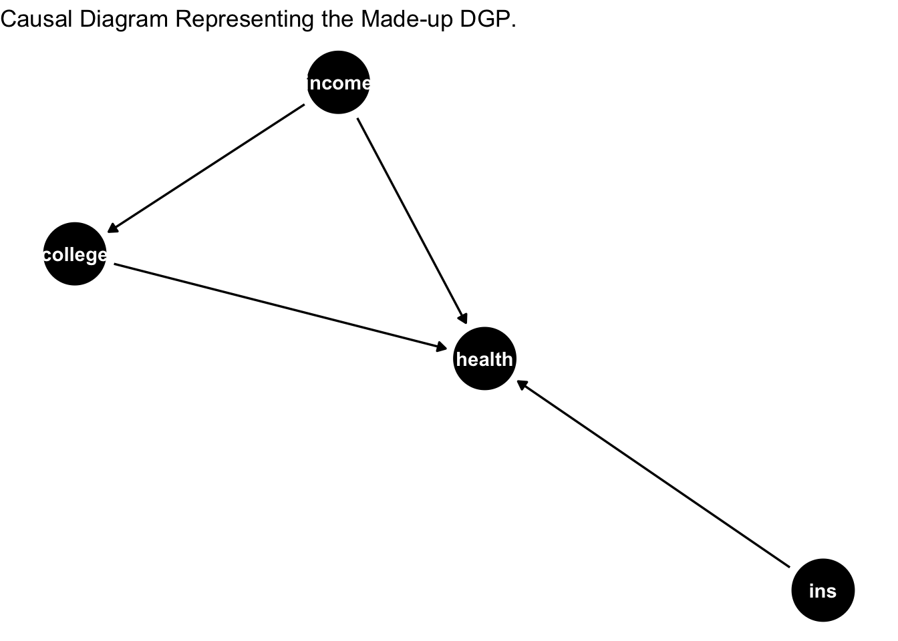

3.4 Using cross-fitting to predict propensity score
Here, we will be using 10-fold cross-folding to predict propensity score.
fun_probit_predict <- function(predictfold){
# @Arg predictfold: number of the fold to avoid for model traning
# but used for prediction
cv_model1 <- train(
W ~ X1 + X2 + X3 + X4,
data = dat[-predictfold, ],
method = "glm",
family = "binomial",
trControl = trainControl(method = "cv", number = 10)
)
predict_logit <- predict(cv_model1, dat[predictfold, ], type = "prob")
return(predict_logit[, 2])
}
##############################
#
# cross-fitting
#
##############################
k <- 10 # number of folds
len <- nrow(dat)
ind <- sample(1:len, replace = FALSE, size = len)
fold <- cut(1:len, breaks = k, labels = FALSE) # create 10 folds
fold <- fold[ind] # randomly allocate the folds by ind
# container to store the predicted values
store <- c()
true_index <- c()
# do the cross-fitting and store
for(i in 1:k){
# which(fold == i) is used as an index, if 8th observation receives the 1st fold for the first time,
# then the 1st prediction value corresponds to the 8th obs
store_new <- fun_probit_predict(predictfold = which(fold == i))
store_new <- as.numeric(as.character(store_new))
true_index_new <- which(fold == i)
store <- c(store, store_new)
true_index <- c(true_index, true_index_new)
}
# create a dataframe with index that maps the predictions with the actual data
store <- data.frame(pscore = store, index = true_index)
# sort by index
store <- store[order(store[, 2]), ]
# propensity score
dat <- dat %>%
mutate(pscore = store$pscore)
# histogram of propensity score
hist(dat$pscore, main = "propensity score \n from cross-fitting")